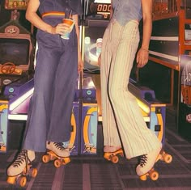
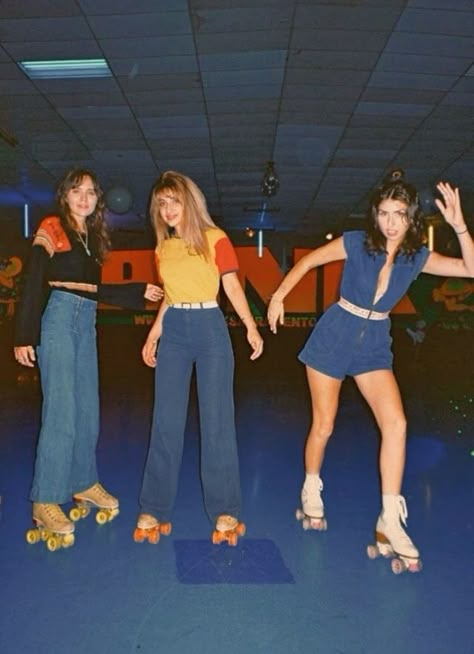
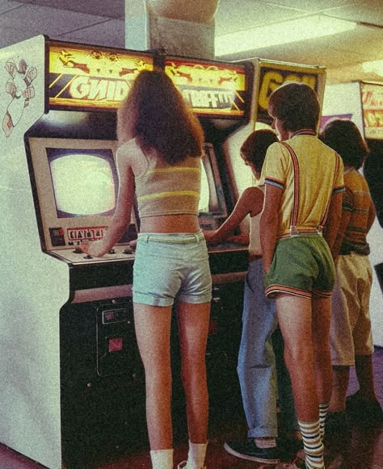

What is the fashion in the 80s ?
A decade typified by its “power dressing,” the 1980s actually opened with stylish sportswear and the soft “New Romantics” style. Carrying on from the late 1970s trend for sportswear and encouraged by a fitness craze, women increasingly wore stylish gym wear in their day-to-day life. This was captured in Jennifer Beals’ attire in the 1983 movie Flashdance. Dance-wear inspired fashion including off-the-shoulder sweatshirts and leggings, while Jane Fonda’s exercise videos also encouraged these styles.Though the dominant trend of the 1980s was bigger is better, taffeta and bright colors, other designers emerged and created their own styles. For daywear, American designers such as Perry Ellis and Ralph Lauren turned to classic styles menswear styles such as blazers, button downs and hand-knit sweaters to create casually elegant womenswear . These styles came to represent casual American style and were adopted as a “preppy” style in the US (“preppy” referencing the elite preparatory schools attended by wealthy teens).The style was influenced by traditional Ivy League and Seven Sisters style, as well as the dress of early twentieth-century British aristocrats . In her book Seven Sisters Style, Rebecca C. Tuite writes, “Lauren’s interpretation of the collegiate look was never a costume or a disguise; it was an understated appreciation of good, classic style” . The plaid Perry Ellis suit pays homage to late 1940s and early 1950s collegiate style. Tuite continues to note that the look was interpreted in many ways throughout the decade: “The preppy fashions of the 1980s ranged from understated and classic to gaudy and ironic” .
On the other side of the world, a shocking new type of fashion emerged from Japan. De la Haye and Tucker write, “The clothes of innovative Japanese designers, who continued to show in Paris, offered a stark and often startling alternative to Western styles” . Designers such as Comme des Garçons’ Rei Kawakubo and Yohji Yamamoto employed deconstruction, exaggerated proportions and to transform how clothing interacted with the body. This resulted in shocking styles that differed from the typical styles of the decade. Their predominant use of black would continue into the early 1990s as the power dressing of the eighties began to evolve towards the minimalism of the subsequent decade.


